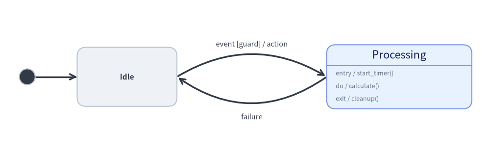
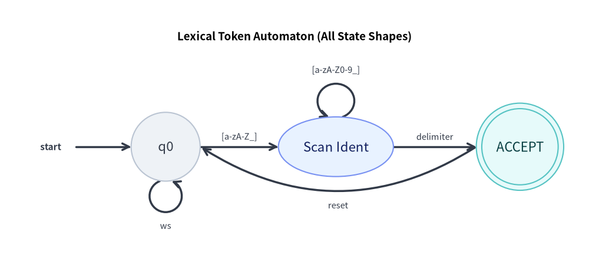

StateDiagram: UML Statecharts, Automata & Transitions
StateDiagram models behavioral state transitions, Finite State Machines (FSM), and UML 2.0 Statecharts. It provides dedicated pseudo-states, internal action compartments (entry, do, exit), and curved arc transitions.
1. Overview & Action Compartments

Source Code
from drawlib.canvas import save, setup
from drawlib.diagrams.state import InitialState, State, StateDiagram
from drawlib.styles import Styles
setup(width=108, height=34)
sd = StateDiagram(
node_style=Styles.Neutral,
edge_style=Styles.DarkBold,
edge_text_style=Styles.Dark.patch(text_size=10.5),
)
init = sd.add(InitialState(style=Styles.Dark), xy=(6.0, 17.0))
idle = sd.add(State("Idle", shape="box", width=22.0, height=13.0), xy=(28.0, 17.0))
proc = sd.add(
State(
"Processing",
shape="box",
entry="start_timer()",
do="calculate()",
exit="cleanup()",
width=32.0,
style=Styles.PrimaryNeutral,
),
xy=(88.0, 17.0),
)
sd.connect(init, idle)
sd.connect(
idle,
proc,
event="event",
guard="guard",
action="action",
bend=-0.30,
start_side="top_right",
end_side="top_left",
)
sd.connect(
proc,
idle,
event="failure",
bend=-0.35,
start_side="bottom_left",
end_side="bottom_right",
text_style=Styles.Dark.patch(text_size=10.5, valign="top"),
)
sd.draw(xy=(0.0, 0.0))
save()
- 5 State Geometric Shapes (
shape=...):Statesupports"box"(rounded rectangle with optional action compartments),"oval"(ellipse/capsule),"circle"(classic FSM state),"double_circle"(FSM accepting state), and"text_only"(borderless text node). - UML Action Compartments: When
shape="box", aStatecard can display internal behavior triggers (entry,do,exit, or custom triggers viastate.add_action(kind, action)) below a divider line. - Pseudo-States (
StateNodeBasesubclasses):InitialState: Solid circle indicating system start.FinalState: Bullseye concentric circles indicating termination.ChoiceState: Diamond shape for dynamic conditional branching.ForkJoinState: Solid synchronization bar ("horizontal"or"vertical") for concurrent state splits and joins.
- Standard Transition Syntax: Transition labels automatically format as
event [guard] / action. - Bidirectional Arcs (
bend) & 8-Direction Anchors: Settingbend=0.3creates smooth curved arcs, andstart_side/end_side/sidesupport all 8 cardinal and diagonal directions ("top","bottom","left","right","top_left","top_right","bottom_left","bottom_right").
2. Constructor, Core Classes & Parameter Reference
from drawlib.diagrams.state import (
ChoiceState,
FinalState,
ForkJoinState,
InitialState,
State,
StateAction,
StateDiagram,
StateNodeBase,
StateTransition,
)
from drawlib.styles import Styles
sd = StateDiagram(
node_style=Styles.Neutral,
edge_style=Styles.DarkBold,
edge_text_style=Styles.Dark,
title="Session Lifecycle State Machine",
)
# State with action compartments + custom action
active = sd.add(
State("Active", shape="box", entry="start_heartbeat()", do="handle_requests()", exit="flush()", style=Styles.PrimaryNeutral),
xy=(60.0, 40.0),
)
active.add_action("on_timeout", "warn_idle()")
# Transition with guard and action
init = sd.add(InitialState(), xy=(10.0, 40.0))
sd.connect(init, active, event="login", guard="token_valid", action="init_session()")
Parameter Reference Tables
StateDiagram Class
| Parameter | Type | Default | Description |
|---|---|---|---|
node_style |
Style |
(Required) | Base Style object for state nodes in the diagram. |
edge_style |
Style |
(Required) | Base Style object for transition edges and arrowheads. |
edge_text_style |
Style |
(Required) | Base Style object for transition labels. |
title |
str |
"" |
Optional title displayed above the diagram. |
title_style |
Style | None |
None |
Optional Style object for the diagram title. |
style |
Style | None |
None |
Optional Style overriding the overall diagram background. |
width |
float | None |
None |
Optional fixed canvas width (auto-calculated from content if None). |
height |
float | None |
None |
Optional fixed canvas height (auto-calculated from content if None). |
margin |
float |
5.0 |
Outer margin padding surrounding all states when auto-calculating size. |
State Class (inherits StateNodeBase)
| Parameter | Type | Default | Description |
|---|---|---|---|
name |
str |
(Required) | State name / label text. |
shape |
Literal["box", "oval", "circle", "double_circle", "text_only"] |
"box" |
Geometric shape of the state node. |
entry |
str |
"" |
Optional entry action rendered as entry / <entry> (shape="box"). |
do |
str |
"" |
Optional ongoing activity rendered as do / <do> (shape="box"). |
exit |
str |
"" |
Optional exit action rendered as exit / <exit> (shape="box"). |
width |
float | None |
None |
Width (or diameter for "circle"/"double_circle"). Defaults: "box"=22.0, "oval"=24.0, "circle"/"double_circle"/"text_only"=16.0. |
height |
float | None |
None |
Height of the state. Defaults: "box"=12.0 (auto-expands for actions), "oval"=13.0, "circle"/"double_circle"=width, "text_only"=8.0. |
size |
tuple[float, float] | None |
None |
Optional (width, height) shorthand tuple overriding width and height. |
style |
Style | None |
None |
Optional Style override for border, fill, text color, and shape_r. |
show |
bool |
True |
Visibility flag (connected StateTransition arcs auto-hide when False). |
state.add_action(kind: str, action: str) -> State: Appends aStateAction(kind=kind, action=action)(rendered as{kind} / {action}) tostate.actionsand returnsself.
Pseudo-State Classes (StateNodeBase Subclasses)
| Class | Constructor Signature | Default Size | Description |
|---|---|---|---|
InitialState |
InitialState(name="", radius=1.75, style=None, show=True) |
Diameter 3.5 |
Solid filled circle marking the initial entry point. |
FinalState |
FinalState(name="", radius=2.2, style=None, show=True) |
Diameter 4.4 |
Concentric bullseye marking state machine completion. |
ChoiceState |
ChoiceState(name="", size=4.5, style=None, show=True) |
4.5 × 4.5 |
Diamond pseudo-state for conditional guard evaluation. |
ForkJoinState |
ForkJoinState(name="", orientation="horizontal"|"vertical", length=16.0, thickness=1.8, style=None, show=True) |
16.0 × 1.8 (or 1.8 × 16.0) |
Solid synchronization bar for concurrent fork/join transitions. |
StateTransition & sd.connect(...)
| Parameter | Type | Default | Description |
|---|---|---|---|
source / start |
StateNodeBase |
(Required) | Originating state or pseudo-state (source in sd.connect, start in StateTransition). |
target / end |
StateNodeBase |
(Required) | Destination state or pseudo-state (target in sd.connect, end in StateTransition). |
label |
str |
"" |
Explicit full transition label (overrides event/guard/action if non-empty). |
event |
str |
"" |
Trigger event name (e.g. "login", "timeout"). |
guard |
str |
"" |
Guard condition formatted as [{guard}]. |
action |
str |
"" |
Transition effect formatted as / {action}. |
bend |
float |
0.0 |
Curvature amount for "curved" routing (0.0 = straight, positive/negative curves outward). |
start_side |
Side |
"auto" |
Exit anchor ("left", "right", "top", "bottom", "auto", "top_left", "top_right", "bottom_left", "bottom_right"). |
end_side |
Side |
"auto" |
Entry anchor (supports all 8 cardinal/diagonal sides + "auto"). |
routing |
Literal["curved", "orthogonal", "direct"] |
"curved" |
Transition path strategy. |
style |
Style | None |
None |
Optional Style override for the transition line and arrowhead. |
text_style |
Style | None |
None |
Optional Style override for the transition label text. |
padding |
float | tuple[float, float] |
0.0 |
Gap distance between state boundary and arrow endpoints. |
side / loop_side |
LoopSide |
"top" |
Self-loop attachment side when source is target (all 8 cardinal/diagonal sides). |
loop_width |
float | None |
None |
Optional width of the self-transition loop ellipse. |
loop_height |
float | None |
None |
Optional height of the self-transition loop ellipse. |
loop_ratio |
float |
0.88 |
Arc coverage ratio along the self-loop ellipse circumference. |
show |
bool |
True |
Visibility flag for the transition. |
Registration, Sizing & Rendering Methods
sd.add(item: StateNodeBase, xy=(cx, cy), width=None, height=None, style=None, show=None) -> StateNodeBase: Places a state or pseudo-state centered at(cx, cy)(with optionalwidth,height,style, andshowoverrides) and returns the mutable element. Ifshow=False, the state and any transitions connected to it are skipped duringdraw()while diagram bounds stay fixed.sd.connect(source, target, *, label="", event="", guard="", action="", side="top", bend=0.0, start_side="auto", end_side="auto", routing="curved", style=None, text_style=None, padding=0.0, loop_width=None, loop_height=None, loop_ratio=0.88, show=True) -> StateTransition(andsd.add_transition(trans) -> StateTransition).sd.get_bounds() -> tuple[float, float, float, float]: Returns(min_x, min_y, max_x, max_y)enclosing all states and self-transition loops.sd.get_size() -> tuple[float, float]: Returns(width, height)of the diagram (includingmargin).sd.draw(xy=(0.0, 0.0), *, scale: float = 1.0) -> None: Renders the state diagram anchored at bottom-leftxy, proportionally scaling state positions, dimensions, curved arcs, and font sizes byscale.
3. Session Lifecycle State Machine (shape="box", ChoiceState & Self-Loop)
The following complete example showcases pseudo-states, choice diamonds, action compartments, a self-loop, and curved return transitions:
from drawlib.canvas import save, setup
from drawlib.diagrams.state import ChoiceState, FinalState, InitialState, State, StateDiagram
from drawlib.styles import Styles
setup(width=128, height=58)
sd = StateDiagram(
node_style=Styles.Neutral,
edge_style=Styles.DarkBold,
edge_text_style=Styles.Dark.patch(text_size=10.5),
title="User Session Lifecycle State Machine",
title_style=Styles.BlackBold.patch(text_size=13.5),
)
# 1. Pseudo-states and state nodes
init = sd.add(InitialState(), xy=(8.0, 24.0))
idle = sd.add(
State("Idle", shape="box", entry="reset()", do="listen()", width=22.0),
xy=(32.0, 24.0),
)
valid_check = sd.add(ChoiceState(name="Valid?", style=Styles.SecondaryNeutral), xy=(64.0, 24.0))
active = sd.add(
State(
"Active",
shape="box",
entry="start()",
do="handle()",
exit="flush()",
style=Styles.PrimaryNeutral,
width=22.0,
),
xy=(95.0, 24.0),
)
final = sd.add(FinalState(), xy=(121.0, 24.0))
# 2. Connect transitions
sd.connect(init, idle)
sd.connect(idle, valid_check, event="login")
# Choice branches (success vs failure)
sd.connect(valid_check, active, guard="valid")
sd.connect(
valid_check,
idle,
guard="invalid",
bend=-0.35,
start_side="bottom",
end_side="bottom",
text_style=Styles.Dark.patch(text_size=10.5, valign="top"),
)
# Self-transition heartbeat loop
sd.connect(active, active, side="top", event="ping", action="extend()", loop_width=8.0, loop_height=7.0)
# Termination
sd.connect(active, final, event="logout")
sd.draw(xy=(0.0, 0.0))
save()

4. Concurrent Task Synchronization (ForkJoinState)
Use ForkJoinState to represent concurrent parallel threads:
from drawlib.canvas import save, setup
from drawlib.diagrams.state import FinalState, ForkJoinState, InitialState, State, StateDiagram
from drawlib.styles import Styles
setup(width=106, height=56)
sd = StateDiagram(
node_style=Styles.Neutral,
edge_style=Styles.DarkBold,
edge_text_style=Styles.Dark.patch(text_size=10.5),
title="Concurrent Task Fork and Join",
title_style=Styles.BlackBold.patch(text_size=13.5),
)
init = sd.add(InitialState(), xy=(7.0, 24.5))
fork = sd.add(ForkJoinState(orientation="vertical", length=22.0), xy=(21.0, 24.5))
job_a = sd.add(State("Compute Analytics", shape="box", width=28.0, style=Styles.PrimaryNeutral), xy=(51.0, 36.0))
job_b = sd.add(State("Index Search", shape="box", width=28.0, style=Styles.SecondaryNeutral), xy=(51.0, 13.0))
join = sd.add(ForkJoinState(orientation="vertical", length=22.0), xy=(81.0, 24.5))
final = sd.add(FinalState(), xy=(99.0, 24.5))
sd.connect(init, fork)
sd.connect(fork, job_a)
sd.connect(fork, job_b)
sd.connect(job_a, join)
sd.connect(job_b, join)
sd.connect(join, final)
sd.draw(xy=(0.0, 0.0))
save()

5. Finite Automaton & All 5 State Geometric Shapes
Beyond UML "box" cards, State supports "text_only" (borderless entry/label nodes), "circle" (standard automaton states), "oval" (capsule states), and "double_circle" (accepting states), along with diagonal anchor sides ("top_right", "bottom_left", etc.):
from drawlib.canvas import save, setup
from drawlib.diagrams.state import State, StateDiagram
from drawlib.styles import Styles
setup(width=128, height=58)
sd = StateDiagram(
node_style=Styles.Neutral,
edge_style=Styles.DarkBold,
edge_text_style=Styles.Dark.patch(text_size=10.5),
title="Lexical Token Automaton (All State Shapes)",
title_style=Styles.BlackBold.patch(text_size=13.5),
)
# 1. text_only start indicator, circle state, oval state, and double_circle accepting state
start_lbl = sd.add(State("start", shape="text_only", width=11.0), xy=(11.0, 26.0))
q0 = sd.add(State("q0", shape="circle", width=15.0, style=Styles.Neutral), xy=(36.0, 26.0))
q1 = sd.add(
State("Scan Ident", shape="oval", width=25.0, height=13.0, style=Styles.PrimaryNeutral),
xy=(73.0, 26.0),
)
q_accept = sd.add(
State("ACCEPT", shape="double_circle", width=19.0, style=Styles.SecondaryNeutral),
xy=(113.0, 26.0),
)
# 2. Transitions with self-loops and diagonal anchors
sd.connect(start_lbl, q0)
sd.connect(q0, q0, side="bottom", label="ws", loop_width=7.0, loop_height=7.0)
sd.connect(q0, q1, label="[a-zA-Z_]")
sd.connect(q1, q1, side="top", label="[a-zA-Z0-9_]", loop_width=8.0, loop_height=7.5)
sd.connect(q1, q_accept, label="delimiter")
sd.connect(
q_accept,
q0,
label="reset",
bend=-0.32,
start_side="bottom_left",
end_side="bottom_right",
text_style=Styles.Dark.patch(text_size=10.5, valign="top"),
)
sd.draw(xy=(0.0, 0.0))
save()

6. Best Practices & Guidelines
- Use
bendfor Opposing Transitions: When two states transition back and forth (e.g.Idle↔Active), applybend=0.25on one transition andbend=-0.25on the return so they do not overlap. - Standard Label Formatting: Prefer passing
event,guard, andactionparameters rather than writinglabel="login [valid] / init". Drawlib guarantees standard UML typography and spacing. - Choice Diamond Clarity: Label exit branches from
ChoiceStatewith explicitguardcriteria (guard="is_valid"vsguard="is_invalid").